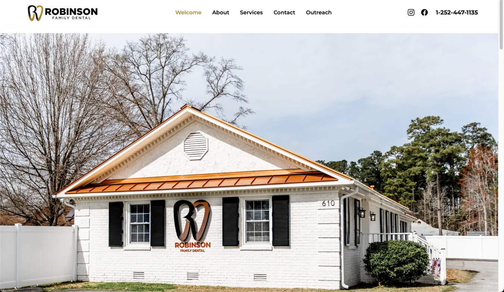
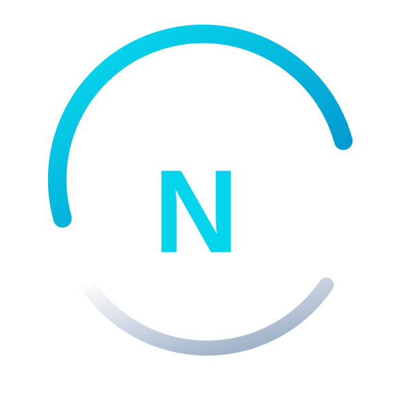
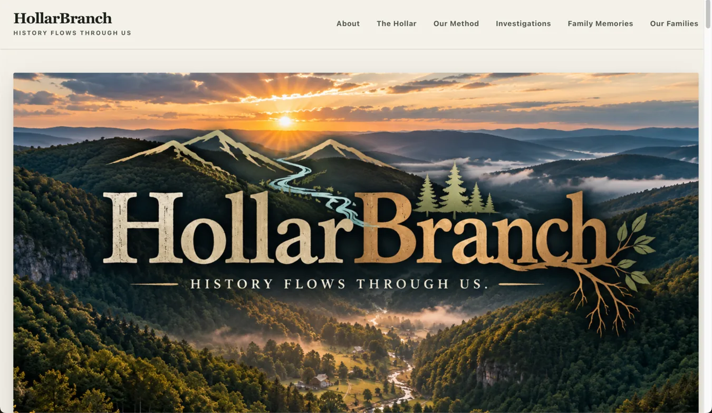
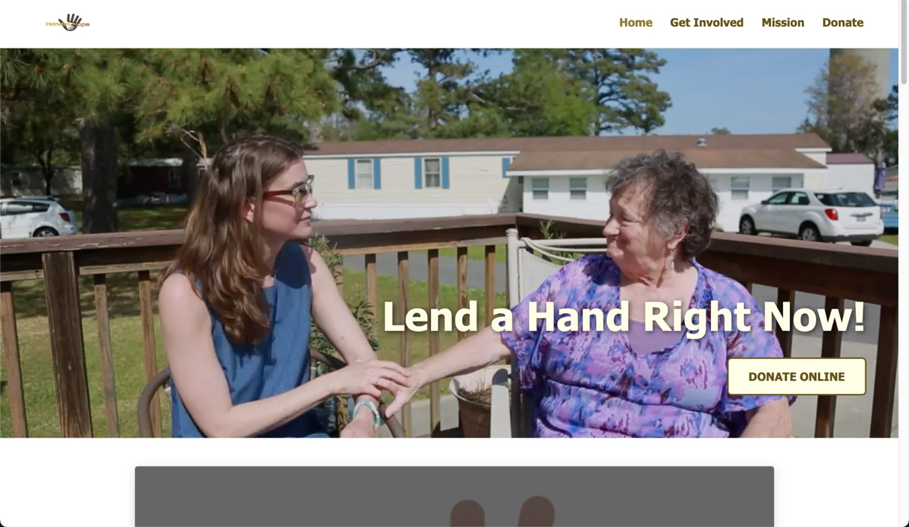
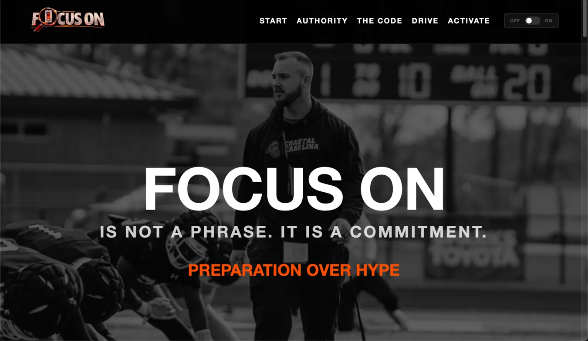
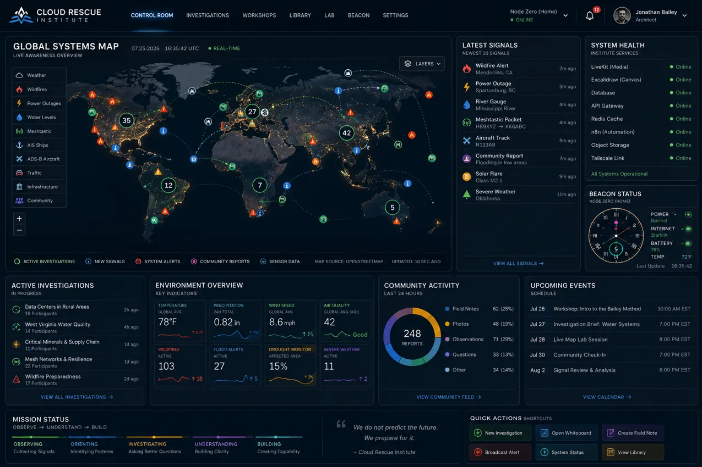
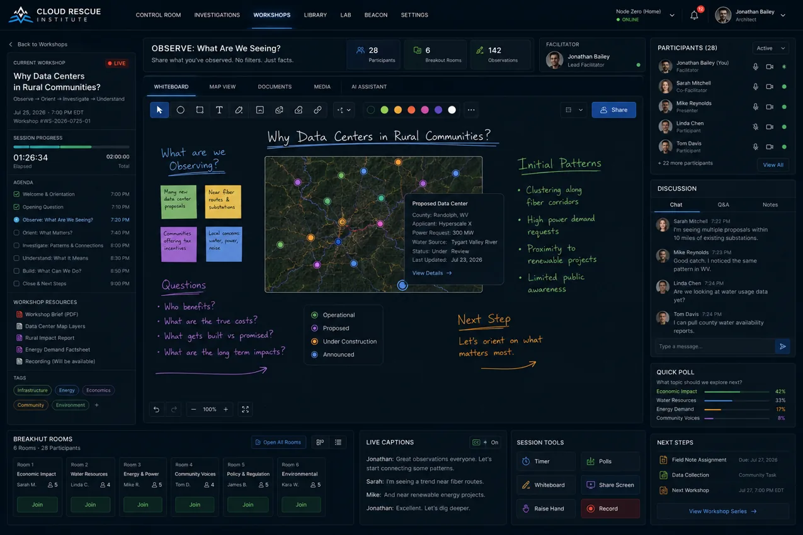
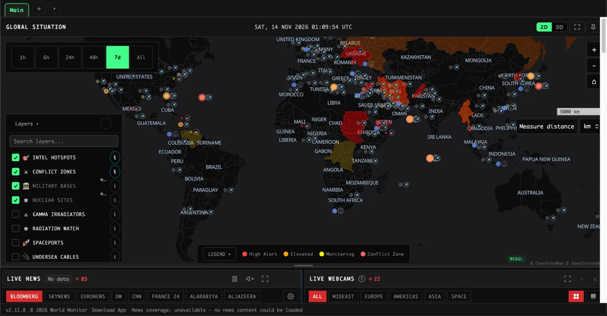

Robinson Family Dental
A responsive public-facing website for a family dental practice, focused on approachable presentation, services, and outreach.
Read case study →
Jonathan BaileyI design and develop websites, software, digital business systems, and automation workflows that help people and organizations work more effectively.
A mix of delivered websites, ongoing builds, interface explorations, and emerging automation ideas. Each project is labeled by its current stage.

A responsive public-facing website for a family dental practice, focused on approachable presentation, services, and outreach.
Read case study →
An editorial website for Appalachian family history, research, sources, and community storytelling.
Read case study →
A community outreach experience with clear paths to learn about the mission, get involved, and donate.
Read case study →
A bold sports-oriented digital experience designed by Jonathan Bailey in collaboration with CT.
Read case study →
An exploratory command-center interface visualizing operational awareness, signals, maps, and system health.
Read case study →
An exploratory facilitator interface for interactive workshops, collaborative mapping, and participant activity.
Read case study →A custom portal architecture for client access, service agreements, requests, permissions, and operational audit trails.
Read case study →A local-first mobile workflow concept using barcode scanning, inventory updates, and replenishment logic.
Read case study →A proposed human-supervised system for opportunity monitoring, notifications, and communications assistance.
Read case study →
Self-hosted open-source monitoring software with a remotely accessible deployment. Focus: hosting, connectivity, and access architecture, not authorship of WorldMonitor.
Read case study →Project stages are stated explicitly. Interface concepts are illustrative; private source code, client records, and infrastructure credentials are not published.
Professional websites, responsive interfaces, maintenance, and ongoing improvements.
Purpose-built applications, client portals, integrations, and internal business tools.
Practical automation that connects tools, reduces repetitive work, and improves reliability.
System planning, architecture, problem solving, and implementation guidance.
I'm Jonathan Bailey, an independent developer and digital systems architect. I work with clients through direct engagements, professional referrals, and freelance marketplaces.
My approach emphasizes clear requirements, maintainable solutions, practical security, and technology that fits the work rather than the other way around.
Tell me what you're trying to accomplish and where you need help.